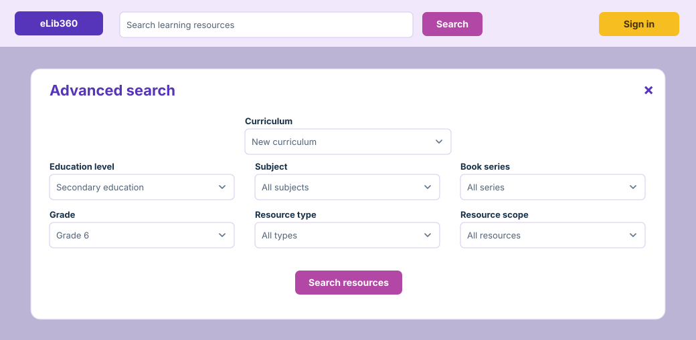
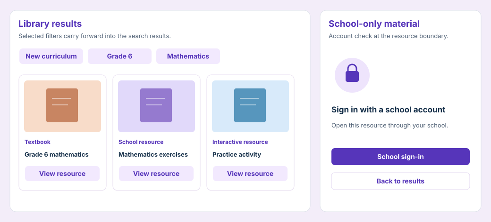
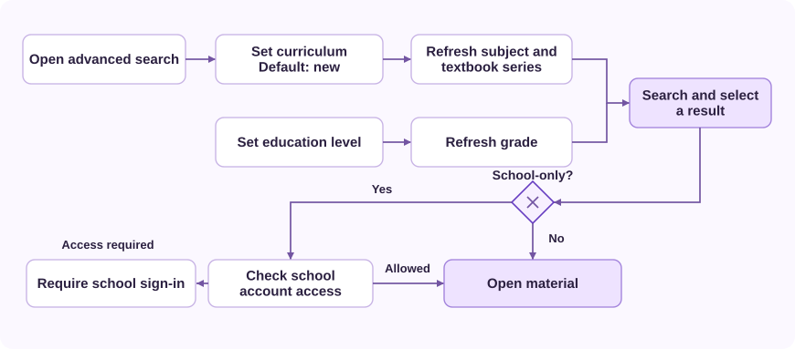

Who uses this product
eLib360 combines community discovery with materials restricted to schools.
| Role | What they do | What the interface must support |
|---|---|---|
| Visitor or learner | Searches by curriculum, level and subject and browses resource groups. | Search filters, resource categories and results. |
| School-account user | Accesses materials scoped to a school. | Sign-in and school access checks at the resource boundary. |
| Community contributor | Submits resources under the proposed account and moderation rules. | Submission and review states as applicable. |
What the catalogue organizes
The library source describes searchable materials across education levels, school-only resources, community materials and interactive resources that link into LMS360.
How advanced search behaves
New curriculum is the default. Subject and textbook series depend on curriculum, and grade depends on education level. The overlay therefore needs to update dependent values when a parent selector changes and remove invalid selections.
Separate browsing, permission and contribution
The design applies school-account access at the resource boundary. The proposal also distinguishes moderation for a later community registration path from the rules for school-issued accounts.
Figma designs and handoff
My Figma contribution
I defined the catalogue structure and access rules. The advanced-search design shows how curriculum changes the subjects and textbook series available, and how education level constrains grade. The resource-card flow shows where school-only access is checked.
The gallery includes original Figma captures and English-language adaptations. Adapted screens use fictional records. Select an image to inspect it at full size.
Resource discovery

Two levels of dependent filters make the relationship between curriculum, subject, textbook series, education level and grade visible.

Resource cards preserve browsing context. Restricted items prompt users for school access on opening.
Search and sorting components
The component shows the open list and three selected states for newest, most viewed and most downloaded resources.
| Figma pattern | What the source shows | Handoff decision |
|---|---|---|
| Curriculum and level selectors | Advanced search defaults to the new curriculum. Subject and book series follow curriculum, while grade follows education level. | Refresh dependent options and clear invalid selections after the parent control changes. |
| Results and resource navigation | The board includes the library homepage, search overlay and separate listing views. | Carry categories and applied filters through the search journey. |
| School resource entry | The specification distinguishes community materials from school-only items. | Evaluate access where the learner attempts to open the resource. |
Workflow · search and resource access

Curriculum drives subject and series, education level drives grade, and resource scope determines whether school access is needed.
Search and access rules
| Trigger | Rule | Result |
|---|---|---|
| Change curriculum | Subject and series follow the selected curriculum. | Refresh dependent options and clear inapplicable selections. |
| Open school-only material | Access depends on the associated school account. | Require school sign-in if necessary. |
| Open linked interactive resource | The learning platform owns the experience. | Follow the resource to LMS360. |